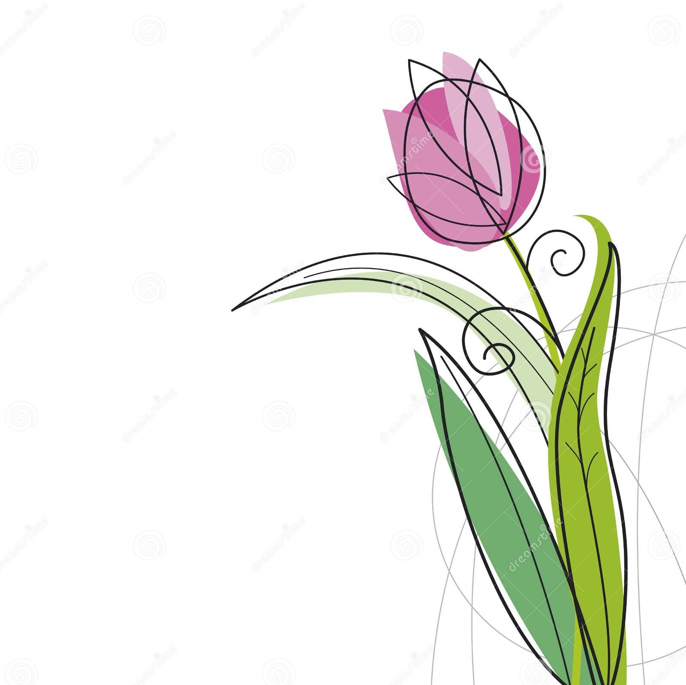
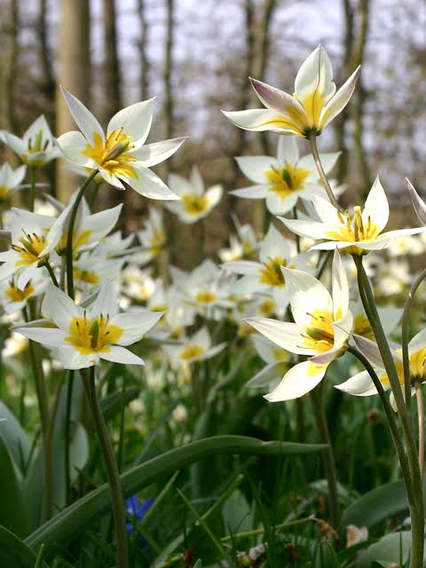
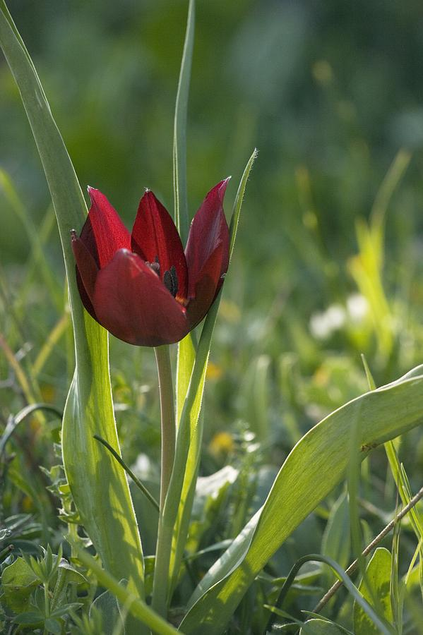
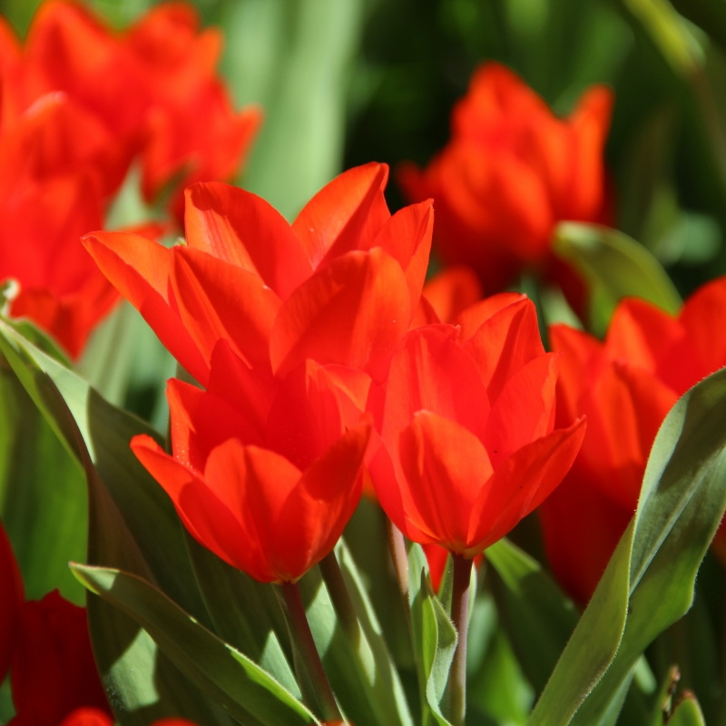

Tulip
Tulip, (genus Tulipa), genus of about 100 species of bulbous herbs in the lily family (Liliaceae), native to Central Asia and Turkey. Tulips are among the most popular of all garden flowers, and numerous cultivars and varieties have been developed.
History
Tulip cultivation likely began in Persia (Iran) in the 10th century, and it eventually became a symbol of the Ottoman Empire. Tulips were introduced to the Western world by Augier Ghislain de Busbecq, the Viennese ambassador to Turkey, who wrote of seeing the plants in Edirne, Turkey, in 1551 and later sent some seeds to Austria. The arrival at Antwerp in 1562 of a cargo of tulip bulbs from Constantinople (now Istanbul) marked the beginning of the horticultural tulip industry in Europe. An early recipient of these flowers was French botanist Carolus Clusius, who was an avid bulb grower and is often credited with the spread of other spring bulbs, such as hyacinths and irises, across Europe. In the 1590s he established a botanic garden at the University of Leiden and cultivated tulips there. In 1596 and again in 1598, broken tulips (tulips that bloom in streaks or flames of colour) were stolen from Clusius’s garden, and the genetically variable seeds of those purloined flowers became the foundation for a lively tulip trade. A speculative frenzy over tulips in the Netherlands in 1633–37 is now known as the Tulip Mania.
Physical description
The tulip produces two or three thick bluish green leaves that are clustered at the base of the plant. The usually solitary bell-shaped flowers have three petals and three sepals. There are six free stamens, and the three-lobed ovary is terminated by a sessile three-lobed stigma. The fruit is a capsule with many seeds. Many garden tulips can be propagated only by their scaly bulbs.
Tulip flowers occur in a wide range of colours except true blue—from purest white through all shades of yellow and red to brown and deepest purple to almost black. Almost 4,000 horticultural varieties have been developed from a number of species and hybrids. There are several different classification schemes based on the plants’ time of bloom, flower shape, and plant size. Among the tulips that appear earliest in spring are single-flowered and double-flowered early types. Tulip types that bloom in mid-season include Mendels and Darwins. Late-blooming tulips are the largest class, with the widest range of growth habits and colours. Among them are Darwins, breeders, cottage, lily-flowered, double late, and parrot types.
Generally, solid-coloured tulips are spoken of as “self-coloured,” while streaked blossoms are called “broken.” The phenomenon of colour streaks in tulips is due to a harmless virus infection that causes the self colour to disappear in certain zonal patterns, leaving the flower’s white or yellow underlying colour to show through in irregular streaks.

Some tulip species
- Tulipa turkestanica
- Tulipa cypria
- Tulipa praestans
- Tulipa sprengeri
- Tulipa urumoffii
|
Tulipa turkestanica
|
Tulipa cypria
|
Tulipa praestans
|
|  |
 |
 |
| Turkmenistan |
Kıbrıs |
Tajikistan |
Back to index